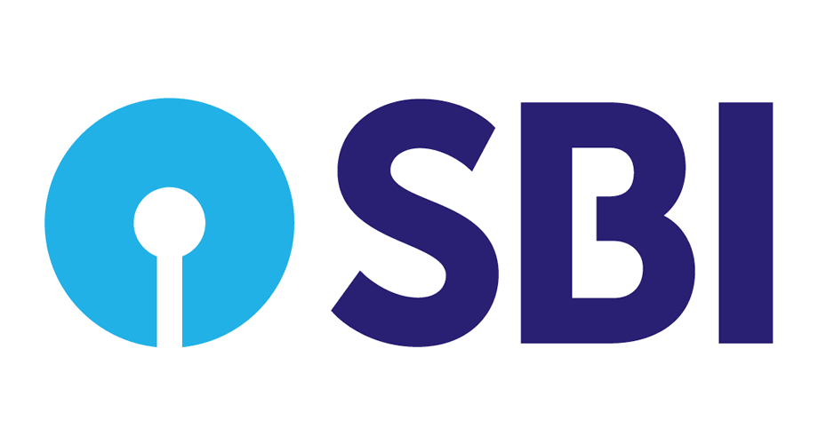

SBI
State Bank of India (SBI) is an Indian multinational public sector bank and financial services statutory body headquartered in Mumbai, Maharashtra. SBI is the 43rd largest bank in the world and ranked 221st in the Fortune Global 500 list of the world's biggest corporations of 2020, being the only Indian bank on the list.[6] It is a public sector bank and the largest bank in India with a 23% market share by assets and a 25% share of the total loan and deposits market. [7] It is also the fifth largest employer in India with nearly 250,000 employees.[8][9][10] The bank descends from the Bank of Calcutta, founded in 1806 via the Imperial Bank of India, making it the oldest commercial bank in the Indian Subcontinent. The Bank of Madras merged into the other two presidency banks in British India, the Bank of Calcutta and the Bank of Bombay, to form the Imperial Bank of India, which in turn became the State Bank of India in 1955. [11] Overall the bank has been formed from the merger and acquisition of nearly twenty banks over the course of its 200 year history.[12][13] The Government of India took control of the Imperial Bank of India in 1955, with Reserve Bank of India (India's central bank) taking a 60% stake, renaming it State Bank of India.
History
Stamp dedicated to the State Bank of India in 2005 Share of the Bank of Bengal, issued 13 May 1876 Seal of Imperial Bank of India. Seal of Imperial Bank of India The roots of State Bank of India lie in the first decade of the 19th century when the Bank of Calcutta later renamed the Bank of Bengal, was established on 2 June 1806. The Bank of Bengal was one of three Presidency banks, the other two being the Bank of Bombay (incorporated on 15 April 1840) and the Bank of Madras (incorporated on 1 July 1843). All three Presidency banks were incorporated as joint stock companies and were the result of royal charters. These three banks received the exclusive right to issue paper currency till 1861 when, with the Paper Currency Act, the right was taken over by the Government of India. The Presidency banks amalgamated on 27 January 1921, and the re-organised banking entity took as its name Imperial Bank of India. The Imperial Bank of India remained a joint-stock company but without Government participation. Pursuant to the provisions of the State Bank of India Act of 1955, the Reserve Bank of India, which is India's central bank, acquired a controlling interest in the Imperial Bank of India. On 1 July 1955, the Imperial Bank of India became the State Bank of India. In 2008, the Government of India acquired the Reserve Bank of India's stake in SBI so as to remove any conflict of interest because the RBI is the country's banking regulatory authority. In 1959, the government passed the State Bank of India (Subsidiary Banks) Act. This made eight banks that had belonged to princely states into subsidiaries of SBI. This was at the time of the First Five Year Plan, which prioritised the development of rural India. The government integrated these banks into the State Bank of India system to expand its rural outreach. In 1963 SBI merged State Bank of Jaipur (est. 1943) and State Bank of Bikaner (est.1944). SBI has acquired local banks in rescues. The first was the Bank of Bihar (est. 1911), which SBI acquired in 1969, together with its 28 branches. The next year SBI acquired National Bank of Lahore (est. 1942), which had 24 branches. Five years later, in 1975, SBI acquired Krishnaram Baldeo Bank, which had been established in 1916 in Gwalior State, under the patronage of Maharaja Madho Rao Scindia. The bank had been the Dukan Pichadi, a small moneylender, owned by the Maharaja. The new bank's first manager was Jall N. Broacha, a Parsi. In 1985, SBI acquired the Bank of Cochin in Kerala, which had 120 branches. SBI was the acquirer as its affiliate, the State Bank of Travancore, already had an extensive network in Kerala.
Employees
State Bank Institute of Credit and Risk Management, Gurugram SBI is one of the largest employers in the world with 245,652 employees as on 31 March 2021. Out of the total workforce, the representation of women employees is nearly 26%. The percentage of Officers, Associates and Subordinate staffs was 44.28%, 41.03% and 14.69% respectively on the same date. Each employee contributed a net profit of ₹828,350 (US$11,000) during FY 2020–21.[2]